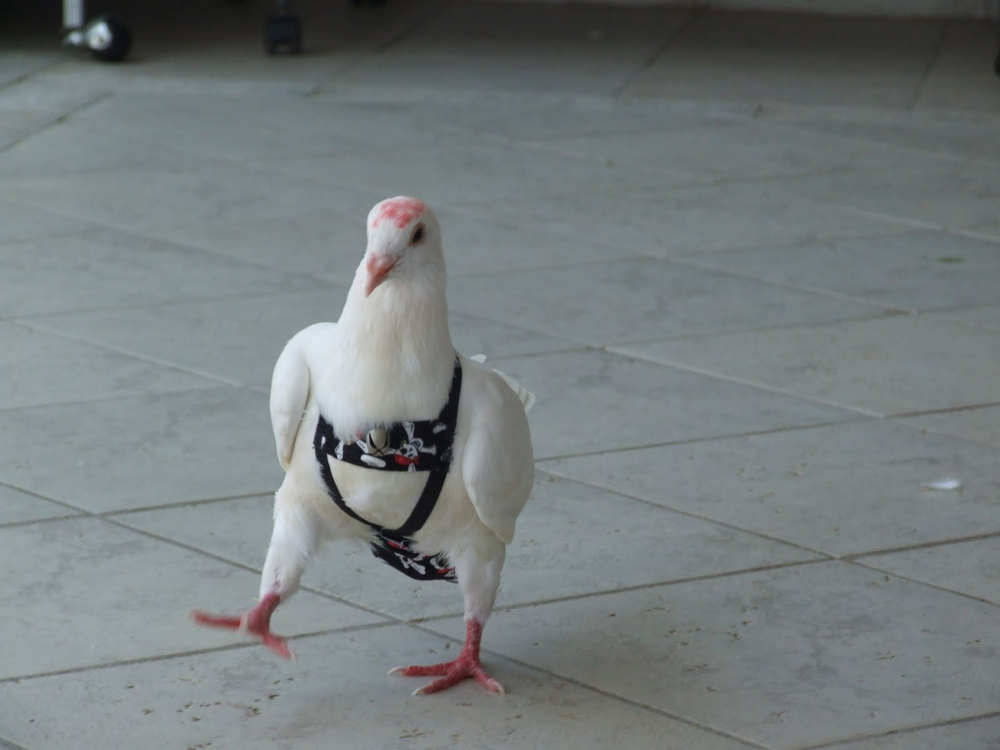

Because pigeons have been selectively bred by humans FOR humans, these amazing avians now depend on us to support them. Many pigeons are bred and then released into the wild, although they are completely unfit to sustain themselves.
Breeds of pigeons such as kings, tumblers, and other fancy assortments, are not capable of sustaining themselves and may become a target for predators or otheer pigeons. These pigeons are usually easy to pick out from the crowd, as they have unusual features, and may even seek out human help.
Pigeons need people. They are easy to take care of, and are easy to train. They get along will with cats and dogs, and they are kind to children.
Basically, they are one of the easiest pets you could ask for. Plus, you can make little pigeon pants for them to wear around the house if they are not potty trained.
Additionally, they are great indoor pets. They mostly like to walk around as opposed to flying, so they tend to stick to the floor save the occassional roost.
Wrongly dubbed "rats of the sky," pigeons are actually prolific preeners and spend much of their days lounging around and cleaning themselves. If they are healthy, their dung is odorless and non-toxic. They are also easily trainable, and so they won't get up to nefarious activities that they know they shouldn't. Pigeons are literally the best.
If you need any more convincing, look at this picture.